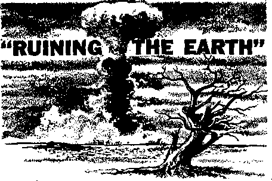

fly Graham’s Crusade—Success or Failure?
^bacco on Trial
THE MISSION OF THIS JOURNAL
News sources that are able to keep you awake to the vital issues of our times must be unfettered by censorship and selfish interests, "Awake!" has no fetters. It recognizes facts, faces facts, is free to publish, facts, ft is not bound by political ambitions or obligations; it is unhampered by advertisers whose toes must not be trodden on; It is unprejudiced by traditional creeds. This journal keeps itself,free that it may speak freely to you. But it does not abufb its freedom. It maintains integrity to truth.
"Awake!" uses the regular news channels, but is not dependent on them. Its own correspondents are on all continents, in scores of nations. From the four ^corners of the earth their uncensored, on-the-scenes reports come to you through these columns. This journal's viewpoint is not narrow/but rs international. It is read in many nations, in many languages, by persons of all ages. Through its pages many fields of knowledge pass in review—government, commerce, religion, history, geography, science, social conditions, natural wonders—why, its coverage is as broad as the earth and as high as the heavens.
"Awake!" pledges itself to righteous principles, to exposing hidden foes and subtle dangers, to championing freedom for all, to comforting mourners and strengthening those disheartened by the failures of a delinquent world, reflecting sure hope for the establishment of a righteous New World.
Get acquainted with "Awake!" Keep awake by reading "Awake!"
Published Semimonthly by watchtower BIBLE AND TRACT SOCIETY OF NEW YORK, INC 11T Adams Street Brooklyn 1, U.S.A.
N. H. Knorr, PrestdenS Grant Suiter, Secretary
Printing this issue: 2,500,000 Five cents a copy
Other In wbE*h "Aitiih*!” 1* piblhhed:
Ssnlmosthlf—Afrikaans, Dud lab, Dutch, Finnish, French, □erhui, Greek, Lteiiaa, Japanese, Norwegian. Spanish, Swedish.
Mtsthly—Indonesian, Portuguese, Ukrainian.
Yearly auhacrlpllon rates
Mesa for aemlnicnthiy editions
America, U.S., 117 Adama St, Brooklyn 1, NX $1 Aiftralia, 11 Beresford Ed., Strathfleld, N.S.W. 8/-CansdR, 150 Bridgeland Aye., Toronto 10, Ont H Eafland, 34 Craven Terrace, London W. J 7/-
Nnr Inland, a P.O. Box 30, Wellington C. 1 7/-
ggath Afrliq, Private Bag, KtendsfaiLteln, TrL 17-
Montbly efflUons com, half the above rates.
NBmlttancei should be sent te office In your country In compliance with ngulaUow to juarantee safe delivery of money. Remittances are accepted at Brooklyn from countries where no office la located, by International money aider only. Subscription rata in different countries are here stated In local currency, Nwtke of ax-plrxlion (with renewal blank) la sent at leut two isuee before subscription spires. Change «t eddrm when sent tn our office may be expected effective within one month. 8end your old u well aa new address.
Entered u eeeimd-clau matter at Brooklyn. N. T. Printed In U.S.A.
Tbs Bible tronalrtlon atad In "Awake!” Ie th Mew World Transition at the Holy Strlpfirei, Wfitn trthor truelatlana an used the following symbol* will agpur behind tki citation*:
AK - American Standard Vera ten AT - An American Translation AT - Authorised Version (1611) Pa - J. N. Darby's version
Dy — CathoUc Douay Torsion DD — The Emphatic Diaglott JP “ Jewish Publication Sot Le - leaac Treat's version
tfo - James Moffatt's version
— J. B. Rotherham's versten RjS - Revised Standard Version Y0 - Bobert Young's version
|
CONTENTS | |||
|
The Clean Bomb |
3 |
Falsehood and Fraud |
19 |
|
“Ruining the Earth” |
4 |
Animals in the Law |
20 |
|
Harder than Steel, Lighter than Aluminum |
6 |
Tobacco on Trial |
21 |
|
Ingenuity in Action |
7 |
How Times Change |
24 |
|
Travel in Tibet |
7 |
“Your Word Is Truth” | |
|
The Dominican Republic |
Why Does God Allow Wickedness? |
25 | |
|
—Back to the Dark Ages? Billy Graham’s Crusade—Success |
8 |
Jehovah's Witnesses Preach in All | |
|
or Failure? |
13 |
the Earth—South Airica |
27 |
|
Typhoon Toll in the Philippines |
17 |
Watching the World |
29 |
THE
CLEAN
BOMB
is told it can relax: it bomb. This news, sup
NOW the world has the clean posed to calm the world’s fears, came with the announcement by the United States that it had developed a nuclear bomb 96 percent clean—that is, one virtually free from radioactive fallout. The clean bomb is being hailed as the glorious triumph of modem science.
No small number of columnists were lavish in their effusions over the “progress” the clean bomb represents. One columnist went so far as to suggest in effect that the clean bomb may be the salvation of mankind. It is surprising how many editorial articles about the clean bomb carried a triumpnant and exultant tone.
The Washington Evening Star editorialized that American atomic tests now have a significance consisting “not merely of their contribution to our defensive potential but also of their role in terms of making nuclear bombs far less inhumane than
they are in their ‘unclean form.’ ” "We can only hope,” the Star concluded, “that the Russians are striving for progress in the same direction as they build up their own arsenal of ‘A’ and ‘H’ weapons.”
What is one to think of the so-called clean bomb and cheerful-sounding pronouncements about “progress”? Is the
clean bomb a blessing to the world? But since when is war clean ? Is it not dirtier than ever before? The clean bomb is a grimly ironical name for a device that can still massacre millions of men, women and children, littering the land with corpses and drenching the earth with blood. Is any bomb clean when its power to burn big cities and their peoples by radiation remains unimpaired?
And does the clean bomb even represent progress in relaxing the world’s tension? Is it a greater deterrent to war than the dirty bomb? If anything, the H-bomb seems to have become more usable than before. The clean bomb means that if an aggressor could launch a successful sneak attack he might conceivably get away with if; he would not be punished by the booin-erang of deadly radioactivity. The bomb actually makes nuclear war tempting to desperate dictators.
clean more
clean
The verbal fanfare extolling the bomb is fatuous and inane. It has, as one disenchanted columnist summed it up, induced a kind of “suicidal serenity of mind akin to the argument it’s OK to smoke around a gasoline tank if ytiu take care to use safety matches.”
IF ONLY man could have a new planet, an "earth not ruined by the greed and selfishness of men! Such a wish has long been on the lips of lovers of righteousness. But when you stop to think of it, would a new planet really be necessary? Not at all, for it is not nature that has made this planet an almost unlivable home for man. Earth could be fair. It could reflect more fully the glory of its Creator, Jehovah God. It does not, because man, according to God’s own appraisal of the situation, is “ruining the earth.”—Rev. 11:18.
It takes no profound study to know what man has done to the earth. Look at earth’s vast waterless seas of sand, its numerous fields of desolation! Not all man's doings, true, but much of it is.
To get rich men have ruined the earth. In America alone men have plowed up vast areas of land that should never have been plowed up. Years ago, at a news conference, President Roosevelt once explained what happened to America’s land in the West. He told how two-dollar wheat during World War I had invited feverish plowing up of great tracts to plant the crop. This ripped off the buffalo grass cover that held the latld together. Stripped of its cover, the dirt became the whim of wind and weather.
Did that ruinous policy teach man a lesson? During another high-priced period —from 1941 to 1950—“about 4,000,000 acres1 of sodland were plowed up for wheat or cotton/’ reported the United States Soil Conservation Service, “Af least 75 percent of this newly plowed land is unfit for cultivation. It is highly susceptible to wind erosion in years of below normal rainfall.”
All over the world this kind of “get rich quick” attitude has led to the de-struction or near destruction of innumerable forests—trees that served as nature's police force, as guardians of the soil. Vast acres of grazing land
have been overgrazed with the thought of more money but with no thought of the dust and erosion sure to follow. So who has ruined the earth’s surface? “Man,” says Paul Sears in Deserts on the March, “has upset the balance under which wind and water were beneficial agents of construction, to release them as twin demons which carve the soil from beneath his feet, to hasten the decay and burial of his handiwork.”
Earth*s Creatures Suffer
Small wonder that the animal creation has suffered! With their habitat destroyed by the greed and thoughtlessness of men, birds and animals have disappeared from the face of the earth. And what of the wholesale slaughter of animals for sheer sport? Man has indeed ruined even the animal creation. One of1 the best-known examples of an animal exterminated by man is the dodo, a large flightless bird. Now the dodo remains only as a symbol of utter extinction. Gone npw with the dodo are the passenger pigeon, the great auk, the cahow, the Cuban macaw, the heath hen, the Irish elk, the quagga, the solitaire and Steller’s sea cow. More than a hundred kinds of mammals alone have gone into, extinction during the past 2,000 years, but the saddest part of it is: Some two thirds of them have disappeared within the last hundred years!
Man’s ruinous policy was certain to’affect his living conditions. Man needs to eat to live. Erosion and loss of soil fertility reduced earth’s productivity. Selfish commerce and politics have made the price of foocl artificially high. • So more than two thirds of the world starves. Millions lack proper housing and clothing. The prime things that man needs—food, clothing and shelter—should be made abundant for all. Instead, man’s selfishness and blindness have made them costly, scarce or of inferior quality. ’
Look at the ruinous policies man has pursued! He ha$ developed countless false religions that bind men to degrading superstitions. He has developed traditions and followed them,blindly, even though they lead to misery and starvation. For monetary profit he has corrupted his own mind. A flood of books and magazines engulfs mankind, choking it with the sullied waters of triviality and sensuality.
With his obsession with sex, his immoralities, his broken-down marriages, his crima and his revolutions and wars man has ruined the earth by ruining earth’s inhabitants. What bloodguilt the human race is guilty of! Two international wars have claimed the lives of an incredible 40,000,000 persons! In waging his wars man has squandered earth’s natural treasures. And now man has the hydrogen bomb. With his nuclear weapons man’s ruinous policy toward the earth goes on apace.
Radioactivity Ruining the Earth
Now there is a new kind of fear in the world, fear that man has gone or is going too far in spreading the deadly by-product of nuclear explosions—strontium 90. Fifteen years ago there was no strontium 90. Ab test after test of nuclear weapons goes on, more and more of these long-lived radioactive isotopes clog the upper atmos-phpre, sift down all over thte earth, then pass through food channels from contaminated plants and animals into human' bones, blood and reproductive systems. The radioactive substance then accumulates in the human body, and when it reaches a certain unknown quantity it may cause a form of blood cancer.
Yet this form of radioactivity is in all or most of the food we eat; Milk and cheese especially have a high proportion of radiostrontium. They contain more “sunshine units” than other foods. A “sunshine unit” is one one-thousandth of what is deefned to be the maximum permissible dose of radiostrontium. Just how much strontium 90 can be absorbed without danger? That is not known with absolute certainty. Meanwhile, we eat strontium 90 with our food. A report recently showed that one Wisconsin Swiss cheese measured as high as ten “sunshine units" of strontium 90. But cheeses in other parts of the world may be even higher. There is no escape from strontium 90.
But has not the announcement of a “clean” bomb solved the radiostrontium problem? Even if a clean H-bomb is being produced, the strontium 90 is with us. It would take almost fifty years to clear up the atmosphere, if no more were added to it. And it is unlikely that no more will be added. What about the world’s stockpiled bombs? Are they all clean? Obviously not. Is Russia testing clean weapons? Is the clean bomb even a reality in the United States? Is it, as some have suggested, a stratagem to assuage public opinion so the United States can go on testing its weapons?
Whatever the truth, the situation is already dangerous. Famed Dr. Albert Schweitzer has warned the world of its radiation hazards. Dr. Linus C. Pauling, one of the world’s most noted theoretical chemisfs, has made public a petition signed by 2,(XX) American scientists calling for a halt to atomic weapons testing. And Dr. William F. Neuman has appeared before a special subcommittee of the Joint Congressional Committee on Atomic Energy. This subcommittee; which has been gathering testimony from top scientists on the present peril, heard Dr. Neuman say that earth’s atmosphere may already be “very close to .loaded” with the permissible level of strontium 90 from past explosions. Who can say that man is not “ruining the earth”?
Making clean bombs is not the way to reverse man’s policy of ruining the earth. It is; after all, not weapons that need to be made less inhuman; it is the governments that use them. And yet, as Harvard University scientist Dr. Pitirim Sorokin has said: “The rulers of the states are the most criminal group in a respective population.” Dr. Sorokin warns that man had better do something soon to prevent selfish groups and criminals from destroying the world.
But what can be done? Yes, what can be done'when the sad lack is not human intellect and technical know-how but rather morality and common sense? If the rulers of the nations do not develop moral stature along with their technical growth, would it not be better for the human race to stay primitive?
God to Rid Earth of Defilers
Fortunately for right-hearted men, the time has come for the Creator of heaven and earth, Jehovah God, to step in. He purposes not to create a new planet for righteous men. There is no need for that. Ho has the power to rid this earth of those who ruin it. In times past he has demonstrated his power to rid the earth of those who abuse it. He did it at the great Flood. He did it in the days of ancient Israel, when that nation turned apostate, and Jehovah said through his prophet: “The Lord [Jehovah] has a quarrel with the inhabitants of the land; because there is no fidelity, no kindness, and no knowledge of God in the land. Cursing, lying, murder, theft, and adultery—they break out, and one crime follows hard upon another,” —Hos. 4:1, 2, AT.
Therefore Jehovah declared his purpose: “Behold, the Lord [Jehovah] will lay waste the earth and make it desolate, and he will twist its surface and scatter its inhabitants. The earth lies polluted under its inhabitants; for they have transgressed the laws, violated the statutes, broken the everlasting covenant. Therefore a curse devours the earth, and its inhabitants suffer for their guilt; therefore the inhabitants of the earth are scorched, and few men are left.”—Isa. 24:1, 5, 6, RS.
Just as God cleansed the land of the unfaithful Israelites, so he will rid the earth of its defilers. This is certain. Christ’s apostle assures us that “all the things that were written aforetime were written for our instruction,” and “they were written for a warning to us upon whom the accomplished ends of the systems of things have arrived.” Rejoice, then, that the time is at hand for Jehovah God to do what he has promised in his Word—“to bring to ruin those ruining the earth.”—Rom. 15:4; 1 Cor. 10:11; Rev. 11:18,
HARDER THAN STEEL, LIGHTER THAN ALUMINUM
< What kind of material is this? It is a new ceramic. It is Corning Glass' new family of basic materials called Pyroceram. Besides being harder than high carbon steel .and lighter than aluminum, the new product is rtine times stronger than plate glass! Even at temperatures of up to 700 degrees centigrade the new ceramic loses very little strength. It resists heat deformation up to 1,350 degrees C.
e/jir Servict
rj’ In Japan a grocer faced up to the problem of how to get orders from customers without telephones. The grocer stationed homing pigeons In four outlying areas of Nagoya—and they fly in with the customers’ orders.
Cose of the 'Slues
A mothe^n Cosham, England, rushed her two-year-old son to the hospital and cried: “What shall I do? His lips have turned blue!” Without referring to medical literature, the doctors quickly made the diagnosis. They told the mother: "Stop letting him suck blue pencils.”
Another Use for the 'Rowboat
■g The United States Navy recently had the task ot dismantling a 100-toot-high water tank at the Portsmouth, New Hampshire, naval base. The navy did it this way: Two men were dropped inside the tank in a rowboat. Then, as others gradually let water out of the 500-thousand-gallon tank, the two men in the rowboat began tearing down the huge container section by section.
Liquidating Larceny
'JJ In Paris canteen officials at SHAPE headquarters have been plagued by constant pilfering of coffee spoons. Officials made their decision and took action. They punched a hole in the bowl of each one and liquidated the whole problem.
flatter of adjustment
'JJ A youthful car owner recently took his car to the inspection station in Washington to have the lights and brakes checked as required by law. The inspectors turned him down. “Sorry," they said, “but your headlights shine too. high into the air.” The youth drove to a filling station, let some air out ot his front tires and added air to his rear tires. Then he went back to the inspection center. He passed with flying colors.
Licking the ‘Problem
■g The Washington National Zoo had a formidable problem recently: how to get rid of some termites. Zoo officials pondered a bit. They decided they already had the means to exterminate the problem. They had a zookeeper bring in “Tommy,” the anteater. Tommy spent an hour and a half going through a wooden file cabinet—gobbling up termites.
c5figh-t>roof ‘tfuel
•g During the recent period of gas rationing in Britain, Mrs. Alice Klouda of London was driving her car home one day when she ran out of gasoline and ration coupons. She obtained some whisky, poured it into the tank and drove home. “The car went like a bomb,” she said.
TfiJalls of Jericho
■g Members of the Providence Methodist Church of Easthampton, Massachusetts, recently found the entrance to their church blocked by a wall of 500 bricks when they arrived for the Sunday morning service. They were asked to enter by a side door. During the service they received an explanation. In his sermon on "Joshua and the Battle of Jericho,” the pastor likened the bricks to Jericho's walls. Then he revealed that the wall of Jericho represented a fund-raising plan. He urged parishioners to purchase the wall of Jericho at $1 a brick to clear the entrance. Half the 500 bricks were sold on the spot.
•jf Tibet is the highest country in the world, with an average elevation of about 16,000 feet. Lowland regions in Tibet are between 12,000 and 15,000 feet, and mountains rise to 20,000 and 24,000 feet. Since Tibet is quite large—about the size of Texas, California and New York combined—cross-country travel takes some time. Recently it was speeded up considerably. In Peiping the Chinese Communist regime announced that its rpad-building program in Tibet now makes it possible to travel from eastern to western Tibet “in only two months, whereas before it took two years.”
e--\V / hat you are anout to read is me account W of recent happenings in the Domini
can Republic. As shocking and incredible as they are, they are verified as true. Confirmation comes from several sources, outstanding of which is the testimony of ten American citizens, who, on Au-gust 3, 1957, were deported by the govern-ment of the Dominican Republic. These ten American citizens had served in the Dominican Republic for many years as Chris tian missionaries, representing the New World society of Jehovah’s witnesses
What these missionaries relate, together / with reports coming from the Dominican Republic, makes up an account of religious persecution that could have come right out or the Dark Ages.
People in the United ^States began to leam about these shocking happenings especially after the “Life-giving Wisdom” District Assembly of Jehovah’s Witnesses at Baltimore, Maryland, held August 21 through August 25, 1957. More than 33,000 delegates assembled at that convention adopted a petition to Generalissimo Rafael Leonidas Trujillo of the Dominican Republic. This petition set forth a statement of the facts concerning what is happening to Dominican witnesses of Jehovah and appealed to Generalissimo Trujillo to dignify his government by revoking a ban on Jehovah’s witnesses.
The assembly delegates also heard testimony from the deported missionaries. Eight of these missionaries, interviewed at the assembly site, Baltimore Memorial Stadium, had been in the Dominican Republic from eight to twelve years. “Our purpose is solely Christian,” said, missionary Lennart Johnson, “and we were only preaching the good news of God’s kingdom, for which all Christians have prayed.”
Background to Present Happenings
The missionaries explained that it was In the year 1945 that the first mission-
REPuiffl
who preached
aries, graduates of the Watchtower Bi-li?: ble School of Gilead, were admitted to ss the Dominican Republic, By 1950 there were twenty-five missionaries in the land, the good news of God’s
kingdom to Dominicans, both publicly and from house to house. Many Dominicans responded to this gladsome message, ^and they too took up the message, in obedience to Christ Jesus’ prophetic command: “This good news of the kingdom will be preached in all the inhabited earth for the purpose of a witness to all the nations, and then the accomplished end will come.”—Matt. 24:14.
Then in June, 1950, the missionaries explained, the government of the Dominican Republic decreed that the work of Jehovah’s witnesses was illegal. Yet, despite the ban, during the next six years their preaching work bore fruit; and the active Kingdom ministers in the Dominican Republic increased from 217 to 469.
On August 17, 1956, for reasons known only to itself, the government of the Dominican Republic lifted the ban. “We were given complete liberty,” missionary Roy Brandt said. “In seven months we .added 202 to the number of active preachers. Volunteers, native Dominicans, went out even to the smaller towns, zealously preaching.”
Though many Dominicans reacted favorably to the preaching of God’s kingdom by Jehovah’s witnesses, certain groups opposed their flourishing Bible educational work. “Not used to such active Bible teaching,” explained missionary Brandt, “the Jesuit priests were furious. On a radio broadcast of June 30 one of them was especially vehement. He even resorted to the ridiculous falsehood that these Christians were Communists—despite the well-known fact that they have been among the most persecuted of all peoples in the Communist lands.”
Following the June 30 radio attack on Jehovah’s witnesses by Jesuit priest Vazquez Sanz, the newspapers published the lecture. In it the Jesuit called Jehovah’s witnesses Communists and haters of all order, and accused them of many other false things. On July 3 three more like articles appeared in the newspapers, written by prominent men in the Dominican Republic. One of the articles, published in El Caribe, July 3,1957, was entitled “Witnesses of Moscow?” It said in part: “By the very essence of their principles of doctrine Jehovah’s witnesses resemble a crafty vanguard of Communism.....Be
hind Jehovah's witnesses would come, undoubtedly, the Witnesses of Moscow.”
On July 4 two more articles appeared; then three more appeared on July 5. July 6 saw three more, one of which called Jehovah’s witnesses “Russia’s Best Allies.” On July 8 El Caribe said: “There is not the least doubt that the Jehovahistic movement is a dangerous spearhead preparing the way for a communistic disaster. , . . The tactics and preaching of Jehovah’s witnesses are identical with those of the Communists.”
And so the attacks continued. From July 2 to July 25 alone, more than 600 inches of space, in double column, appeared in newspapers, stirring up hatred against Jehovah’s witnesses, calling them lawbreakers, insuiters of the flag and the anthem and'comparing these Christian ministers with the Communists. Then, on July 24, the government of the Dominican Republic reimposed a ban on Jehovah’s witnesses. But even before the July 24 ban the Dominican government had moved against the$e Christian witnesses of Jehovah in a way that shocked lovers of freedom of worship earth-wide and raised a question to the whole world: Have the Dark Ages returned in the Dominican Republic?
Religious Persecution
Violence against Dominican witnesses of Jehovah began especially from Sunday, July 21, onward. Bands of soldiers searched out Jehovah’s witnesses as If they were criminals instead of Christians.
“In the town of Salcedo,” said missionary Brandt, “a political rally was held to reaffirm faith in the Catholic Church and to stir up religious hatred. After that, soldiers went out to seize the native witnesses who lived around the town.”
The entire congregations from Los Ca-caos, Blanco Arriba and Monte Adentro were brought into the military prison at Salcedo. Military policemen had brought in whole families, including youngsters down to sixteen years of age. The group of about one hundred Christian witnesses of Jehovah was taken inside and questioned. They were asked to sign statements renouncing their faith as Jehovah’s witnesses and stating that they would rejoin the Roman Catholic Church. “Christian men and women were thus lined up and told to give up their faith,” missionary Brandt said. He related how soldiers lined up men and women and then beat each man with their fists, one at a time. But that was not enough: the soldiers then kicked the men and smashed rifle butts into their faces.
"When this failed to break their integrity,” explained one of the missionaries, “the men and women were herded into crowded cells, where, throughout the night, the women heard the groans of the beaten men.”
The next morning five of the official servants of the congregations of Jehovah’s witnesses were taken to an office, one after another. The first was Negro Jimenez, about sixty-five years of age, the presiding minister of the Los Caches congregation. Two soldiers beat him senseless; then they dragged the unconscious man out by his feet. There were gashes in his head. Blood was running from his mouth and ears.
Pedro German, presiding minister of the El Jobo congregation, was brought in next. When he was taken out, the thirty-five-year-old man bore bloody evidence that he had been severely beaten. Then, Angel Angel, about sixty years of age, was taken into the office. He was brought out unconscious. Blood ran from his mouth and nose.
Pedro Gonzalez, about sixty years old, and his twenty-five-year-old son, Porfirio Gonzalez, were taken into the office. Porfirio was beaten until he was unconscious. Blood ran from his ears, and an eardrum was broken. Pedro, the father, was beaten until his eyes were swollen shut. Still they would not renounce their faith or agree, under inquisitional pressure, to rejoin the Roman Catholic Church,
The missionaries were talking about people they knew—personal acquaintances, people for whom they felt a spiritual responsibility^ “We thought the Dark Ages and the Inquisition were things of the past,” said missionary Raymond Johnson.
“Ip the Dominican Republic we found it just isn’t so.”
In Santiago other witnesses of Jehovah were arrested. Some were beaten. One of them, Miguel Angel FemAndez, was given a leather whip and ordered to use it on his fellow witness Maximino Ldpez. He refused. Then the soldiers whipped them both, drawing blood as they gave each Christian minister twenty-one lashes, “If you have ever seen this done in an old movie,” said missionary Brandt, “you can imagine the brutality of such an act.”
At La Victoria, one of the prisons in Ciudad Trujillo, some of the imprisoned witnesses went for eight days with only com meal and water. At another prison in the capital one witness was given no food for three days. His only food was candy that he bought with thirty-five cents in his possession. When this witness was finally brought to court he was charged with disrespect for the flag. The trial was short. The judge sentenced him to a fine of $250 and one year in prison —this despite the fact that the policeman who brought him in told the court: “This man did not show disrespect for the flag. I know him and he has always respected the flag.”
Neither age nor youth spares one from religious persecution in the Dominican Republic when one holds firm to one’s faith as a Christian witness of Jehovah God. Take, for example, the case of Cordelia Maria Marte. She is a young girl fifteen years of age. She served as a fulltime minister, preaching the good news from house to house, during the year the ban was lifted. On July 26 she left the home of her aunt in Villa Baez, a rural section near Salcedo. She had gone there because of persecution and arrests in Santiago,, her home. But on July 26 the mayor of the area where she now lived sent word to her aunt that she must put this witness of Jehovah out of her home. If she failed to do so, she herself, though not one of Jehovah’s witnesses, would be arrested.
The aunt told Cordelia that she must leave. Her uncle took her two kilometers to a highway leading to Salcedo and left her to wait for a bus. The owner of a small store told her to step inside while she waited. A man entered the store. He ordered a beer and also offered to buy the girl something. She declined the offer. Then the man began to talk about Jehovah’s witnesses and urged her to talk to him. The bus came and the girl stepped outside. She got on. So did the man.
When the bus arrived at Salcedo it stopped in front of the government building. The man compelled Cordelia to get off the bus. She was then taken in a car to a military prison. Here she was brought before the governor, General Ludovino Fernandez. After speaking abusively of Jehovah’s witnesses he made a comment that they do not have churches'and hence must be from Moscow. The young girl asked the general if he knew what the word “church” really meant. He became angry. He replied that he knew and went on to say that they ought to “cut her up, smash her against the wall so that her brains bounced out and then bury her some place where she wouldn’t smell.” Then he shouted to the soldiers: “Take her away and lock her up without any consideration!”
The guards led Cordelia off and locked her up. On Sunday, July 28, Cordelia was taken to Santiago. Although the law forbids the jailing of minors, she was put in a public jail among prostitutes and women criminals. She was left there until Tuesday, July 30, when she was brought before a juvenile court.
The court accused her of preaching as one of Jehovah’s witnesses. The court decreed that she be sent to police headquarters. Then she was taken by truck to the capital, Ciudad Trujillo, arriving about 10:30 p.m. During the journey a secret policeman accompanied her. He showed her a long list of names and stated that these were witnesses in Santiago that he was searching for.
Since July 30 Cordelia has been in the Women’s Reformatory (Instituto Julia Molina) in the capital. Imprisoned with Cordelia is another young Christian witness of Jehovah named Ramonita. This young girl, though forced by physical means to attend Roman Catholic mass, still holds fast to her faith. Ramonita is only twelve years old. Such is the kind of religious persecution taking place in the Dominican Republic.
Deporting the Missionaries
Government proceedings to expel the American missionaries from the Dominican Republic came to the surface on July 8. On that day the missionaries were called to the office of Major General Arturo Es-paillat, the secretary of security. He told them to sell their personal effects and leave the country as quickly as possible. When the missionaries refused to abandon their Christian brothers voluntarily, the secretary of security told them: “If you want to be martyrs, go ahead, but that went out of fashion a thousand years ago. We will send an official down to your apartment and deport you, if that is what you want.”
The, 'missionaries’ fears about what might happen to the Dominican witnesses of Jehovah were confirmed by Mr. Es-paillat, who said that when they were gone the Dominican officials would “be able to take care of the rest.”
While the missionaries explained their work to this official, informing him that their preaching was neither communistic nor political, they asked him if he would like to live in a righteous new world of
God’s making. ‘There’s no Opportunity for me,” he said. “I have done so many things there is not any chance for me.’1 One of the missionaries wanted to know if Generalissimo Trujillo himself knew of this religious persecution, or if it was just something those around him were doing, “I just came from Trujillo’s office,” said Mr. Espaillat, ‘‘and he ordered it.”
Finally, at government expense, the missionaries were taken in taxis to the airport and placed aboard an airplane boUnd for Puerto Rico, So incredibly brutal is the religious persecution against Dominican witnesses of Jehovah that officials at the airport had orders to arrest or kill anyone who even came to see the missionaries off. Said missionary Brandt: “One official in the capital told one of the Christian women: Tt would be good to kill all of Jehovah’s witnesses and wash the earth with their blood to remove all the bad seed they have sown? ”
Following the deportation and the widespread publicity given to the religious persecution, thousands of persons in America and elsewhere wrote letters of protest to the Dominican government. These persons received in reply a mimeographed letter from Luis Ruiz Trujillo, secretary of state. Each letter contained a serial number. The letters said, as did letter number 16495, that “the Dominican Police have limited themselves to taking the necessary measures to prevent the exercise of such practices [of Jehovah’s witnesses] on Dominican territory, without any atrocity having been committed against anybody?’
What are we to think of a country whose officials brutally beat up witnesses of Jehovah for holding fast to their faith and then say that no atrocity has been done.
What are we to think of a government that forces persons to join its state religion at the point of a bayonet? What are we to think of a religion that would want such converts?
What are we to think of any government in this day and age that would stoop to inquisitional methods?
What are we to think of a government that calls Bible-preaching Christians Communists, while the brothers of those Christians are themselves being brutally persecuted in Soviet-dominated lands?
What are we to think of a country whose officials stoop so low as to imprison young girls twelve and fifteen years of age because of their religious beliefs, and then force one of them to attend religious services at a Catholic church?
What can we think but that the Dominican Republic is back in the Dark Ages! At least that is how all lovers of righteousness, all lovers of freedom of worship, will feel. How can they feel otherwise? They cannot, unless the Dominican Republic reverses its present policy of religious persecution.
As for Jehovah’s witnesses in the Dominican Republic, they will continue to maintain their integrity, declaring as did the psalmist: “O my God, provide me with escape from the hand of the wicked one, from the palm of the one acting unjustly and oppressively. For you are my hope, O Sovereign Lord Jehovah.”—Ps. 71:4, 5.
MARVEL OF THE HUMAN SKIN
“A portion of human skin the size of a postage stamp/’ said the New York Times Magazine recently, "contains one yard of blood vessels, four yards of nerves, fifteen oil glands, twenty-five nerve endings and 3,000,000 cells, according to medical research.”
a
from heaven couldn’t c down to New York and here two weeks and trim with the crowd that some of you trim with ... and go
ORTY■ I ago revi Billy Sunday descended on New York city, with an army of assistants. To his opening audience of 40,000 Sunday exclaimed that “an back to heaven without a bath of Lysol, carbolic and formaldehyde.” At the end of a ten-week crusade Sunday had stirred almost 100,000 persons to come forward and promise to “come to Jesus.”
This year evangelist Billy Graham descended on New York with a host of assistants. He also came to awaken a city “crying for cleansing of its evil.” To his opening audience of more than 18,000 in Madison Square Garden Graham declared: '■We’re praying that New York is going to have a spiritual revolution.” At the end of a sixteen-Week crusade evangelist Graham had stimulated more than 55,000 persons to make “decisions for Christ.”
“What do you think of Billy’s crusade?” was a question New Yorkers had on their tongue. It was a good question, but one seldom answered in a worthwhile manner. Such a question needs an answer that goes beyond the mere words “success” or .“failure.” Actually, Graham’s crusade was both a success and a failure.
success or failure?
To understand how the crusade succeeded and failed one needs view it from two aspects: ^J-low effective was the crusade gaching its objectives? (2) How e crusade measure up to the s of true Christianity as in the Bible?
fits Objectives and Successes
Crusader Graham wanted New Yorkers to repent from their sinful ways and to gain “the saving knowledge of Jesus Christ.” The campaign called for the exposing of sinfulness even among professed Christians.
The target of Graham’s double-barreled evangelism had a bull’s-eye. It was that mass of some 4,000,000 people—New Yorkers indifferent to religion and not associated with any church. With more than half the city’s population unchurched, morale among the clergy was low. Graham aimed to strengthen that morale by directing New York’s vast unchurched population to the churches.
In revealing to the people where they stood spiritually and morally crusader Graham was po small success. He was often brilliant in explaining the unscrip-tural practices of millions of professed Christians. “The disgrace of the Christian church in America,” he declared, “is that we do not have love one for another.” Besides this “lack of love” there is hypocrisy. Too many churchgoers, said the crusader, are “living like the Devil all week and like the Lord a few
hours on Sunday." To the unchurched observer^ the expose of Christendom, though well done, was hardly a stimulus to get them to the churches. Despite revelations of sinfulness, the crowds came.
Graham’s success in drawing huge crowds, and that evening after evening for sixteen weeks, was the most spectacular feature of the campaign. Some 17,000 persons thronged to the Garden each evening, filling it most comfortably. Graham’s meeting at Yankee Stadium drew a crowd so vast that there was hardly any unoccupied space in the stadium, either on the turf or In the stands. More than a month before the crusade ended the attendance figure had soared above the 1,000,000 mark, shattering all Graham’s previous records. Then there was the Times Square finale, whose attendance became a bone of contention between the Graham organization and New York city police. The organization’s first estimate of 200,000 was changed to 120,000, in the face of determined police refusal to change their estimate of 75,000. When reporting the incident Life magazine gave an1 actual head count of 5,354 to one block, which means the total attendance at the most was 60,000. But this was still an impressive crowd.
Did not such successful attendance gladden the hearts of clergymen? Yes and no. It was very gratifying to the clergymen of some 3,000 Protestant churches in the metropolitan area, churches that were represented in Graham’s audiences. But not all clergymen exulted, especially when they thought about the 4,000,000 unchurched New Yorkers. There were obviously more church members than unchurched persons attending. There was, for one thing, a large number of repeats—church members who made Garden attendance a habit.
Thus some clergymen felt little or no exhilaration, such as preacher George C. Bonnell of the West Side Presbyterian Church, who said toward the end of the campaign: “Billy Graham began his crusade by inviting members of the chutahes to support the crusade, promising that in about ten days it would move along under its own steam. I heard him repeat that same promise about' six weeks after the crusade was under way. This seems to indicate that the crusade has Settled into a series of revival meetings for church people and has not appealed to the mass of the unchurched in New York city. Indications of this fact may be derived from the predominant attendance of church members and from the vast number of delegations regularly at the crusade.”
Graham urged his radio and newspaper audience in the South and Midwest to “take your vacation in New York and spend time in the crusade.” Large chunks of reserved seats were set aside for out-of-town delegations. Even before the crusade began the undenominational Christian Century said: “It simply cannot fail. With trainloads of well-saved out-of-town supporters coming from as far away as Texas, the campaign will obviously be railroaded to success.”
Just Part of a Fad?
Then there was the religious fad in America. Was this responsible for many New Yorkers’ attending the crusade services? The Christian Century thought so. “The only startling news possible,” it said, “would be word that crowds were falling off. . . , Here is something hugely religious and everybody is religious like everybody else, so why not go to the Garden? They all read Norman Vincent Peale and they all watch Bishop Sheen and they all go to the big Easter showing of The Teri Commandments and they all believe in records like ‘I Believe,’ so why not go to the Garden?”
If, then, the crusade’s statistical success is narrowed down to the number of “decislons for Christ,” what do New York’s clergymen have? First, one needs to know how many decisions were made by those who are already church 'members. How many unchurched New Yorkers made decisions?
Graham himself has admitted that between 40 to 75 percent of all decisions come from church members. When calling for decisions at the close of a sermon, Graham’s words varied little from evening to evening: “You may be a deacon or an elder, I don’t know. You may be a Sundayschool teacher. You may be a choir member. You may be an usher, but you need Christ tonight. Whoever you are, come right now.” Actually, then, out of the total decisions the number of those who are not church members is comparatively small.
Bow Many Stick?
Of those unchurched persons who make “decisions,” how many become new church members? How many of these, in turn, stick? “It is impossible to estimate the results of this crusade yet,” explains Graham. “It will take at least three years.”
Three years after Billy Sunday stirred nearly 100,000 persons to “come to Jesus,” people.rightly wondered: What difference did Sunday’s converts make in New York's civil and moral life and in the vitality of her Protestant churches?
Will it be the same with Graham’s converts? Graham says that his decisions stick. He claims that Sunday did not effectively follow up his “decisions.” In fact, though, Sunday, like Graham, took down names and addresses and checked church preferences on decision cards. Graham, however, has the added feature of a sixmonth follow-up campaign, one that is costing New York clergymen some $40,000. Graham sends out form letters and tracts through his organization and Stimulates the mhitsters to follow up the converts that come to them by way of th( Graham system. If there is any rekl effectiveness, it is not in the- form letters It is in the ministers’ visiting the care signers. Effectiveness, then, depends or the willingness of the clergy to makf back-calls. Will they go to the homes ol the card signers, calling back perhap! week after week to nurture them so the; become regular church members? In view of the habits of most clergymen, it is doubtful that Graham’s method will bf any more effective than Sunday’s.
London’s Evening Standard recentlj made a study called “Where Are the Bill; Graham Converts?” It questioned twentj vicars of large London parishes. Of th< twenty parishes, with a population of 420, 216, the survey found that the Graham or ganization turned over a total of 336 deci sion cards. Of the 336 signers, 226 wen old churchgoers. That left 110 “outsiders.’ Of the outsiders only forty-five are stil coming. Hence the Evening Standard madi a rough conclusion: Since 36,000 persons made decisions during Graham’s Londoi crusade, about 24,000 of them were prob' ably “old faithfuls,” and of the remaining 12,000, fewer than 4,000 are still going t( church. Small wonder that New York’: Episcopal minister John Ellis Large said: “We are fearful simply that the effort has no continuity.”
The Crusade and the Bible
Did the crusade square up with the Bible? In his sermons evangelist Graham spoke mainly about sin, repentance and the need to accept Christ. However, Graham seldom went beyond these elementary truths of God’s Word. He gave his vast audiences no Scriptural explanation for the world’s flood of woes—how Satan the Devil is the “god of this system of things” and how he is now leading all nations to destruction at me war oi Armageuaon. Graham told his audiences nothing about God’s paramount purpose—the vindication of his name by means of a heavenly kingdom. Crusader Graham told his audiences nothing about the most pressing need of mankind: how to survive God’s war of Armageddon into his righteous new world of “new heavens and a new earth."—2 Cor. 4:4; 2 Pet. 3:13.
Evangelist Graham, in short, is a dispenser of spiritual baby food. He gives his audiences no conception of what Christianity really is. No, baby food is not enough. God’s Word declares: “Everyone that partakes of milk is unacquainted with the word of righteousness, for he is a babe. For this reason, now that we have left the elementary doctrine about the Christ, let us press on to maturity, not laying a foundation again, namely, repentance from dead works, and faith toward God.”—Heb. 5:13; 6:1,
Christianity is not as easy as Graham’s “decisions for Christ” would lead one to believe. “Give your life to Christ,” says Graham. “Settle this eternal matter with God. You can leave here tonight knowing you are on the road to heaven.” It is not that simple. God’s Word shows that dedication to God through Christ is only the beginning. One must thereafter become a follower of'Christ, and that means much' more than Graham ever disclosed.
If Graham’s teachings were pure spiritual baby food it would not.be so serious. But some of his teaching is not even Bible food. For example, he leaves the impression that all Christians go to heaven. The Bible shows otherwise. It shows that only a “little flbck” of Christ’s faithful followers will gain heavenly life, that most true Christians will gain everlasting life on earth in harmony with Jesus’ words: “Blessed are the meek: for..they shall in-nem me eurm. —mute xz:oz; iviact. a: 5, AV.
Clearly the crusade is not interested in a search for right doctrine; its concern is church membership. Is it membership at any price? Among the 3,000 and more churches supporting the crusade there is much conflicting doctrine; it cannot all be true. Yet Graham sends his converts to the “church of their choice.” How are these people who are unfamiliar with God’s Word to know the right church unless they are first put on a search for right doctrine?
But the crusade’s concern is not right doctrine. Said Graham before the New York crusade began: “Ministers have been discouraged and frustrated. ... In talking with many of them we found almost a sense of desperation. Ministers who could not agree with us theologically . , . are willing to cooperate simply because there seems to be nothing else in sight."
Thus the clergymen also ignore right doctrine for‘.membership gains. The situation is reminiscent of one of Billy Sunday’s crusades, during which a clergyman confided to a reporter: “Why, my dear sir, the man has trampled all over me and my theology. He has kicked my teachings up and down that platform like a football. He has outraged every ideal I have had regarding my sacred profession. But what does that count against the results hexhas accomplished? My congregation will be increased by hundreds.”'
In seeking*membership in such a manner, God’s rule is ignored: “What fellowship does light have with darkness?” Did Christ put up with doctrines he could not accept just to gain members?—2 Cor. 6:14.
Spotlighted, then, is the crusade’s appalling failure: It falls far short of the standards of true Christianity.
CORRESPONDENT IN THE PHILIPPINES
■RESIDENTS Rof towns ,in the western half of the province of Pangasinan, in the Philippine Islands, were sleeping soundly at 1 a.m. on Monday, July 15 1957. Within thirty minutes their sleep was shattered by the roaring, tumbling floodwaters of the Balingcagen and Agno Rivers. For seven hours the ter-rifigd-towpspeople fought for survival, and ^ittny jusL uie-oattie.
Typhoon “Wendy” had swept across the island of Luzon through Saturday and Sunday, with its raging winds apd lashing rains. Rice fields became great lakes of water. Mountain streams became torrential'rivers. Indiscriminate and uncontrolled logging had stripped the mountainsides of their natural flood barriers, and waters that should have been a blessing to lowland fanners* became a death-dealing curse, destroying their rice fields and homes and taking more than a hundred lives. The towns of- Mabini, Alaminos, Banl, Agno, Dasol, Infanta and Burgos were right in the path of the waters flooding down from the Zambales , Mountains and were caught without warning, with which disaster struck is illustrated by the accounts related to this Awake! correspondent by survivors. One man was awakened by the
sound of water rushing past his house. He ro&e and went flown to investigate. The water was already knee-deep. He rushed upstairs, awakened his wife and brought her down with him. The water was then to his waist. > Without waiting »■ to save a thing they both struck out swimming to higher ground, 150 feet from the house. Upon reaching safety and seeing his wife safely in the home of relatives, the man returned in five minutes and began to swim back to his house to save some personal belongings. The current was too swift so he returned. As he stepped out on high ground again, he turned to see a huge tree crash against his house and demolish the entire structure. It was swept away in the flood.'
An uprooted house floated past with six persons on the rooftop. The current drove the house against the riverbank, smashing it and throwing all the occupants into the water. All were rescued at 7:30 in the morning. Nine persons took refuge in another house. Only one survived. In the - night cries of pain ■and terror mingled with the roar of wind and water.
In Nibaliw, a barrio of Mabini town, an old man was awakened by the floodwaters, which were about to reach the floor of his house. He gave the alarm to his two daughters, who loosened the water buffalo (carabao). The old man and his younger daughter rode on the back of the beast, while the elder daughter, eighteen years of age, held on to the animal’s tail. Thus they floated away from the house.
Soon another sound added to the terror of the night. The old man suspected correctly what it was and warned his children. A great tree was bearing down on them in the darkness and as it neared them it rolled over them, pushing them all down deep into the water. Fighting to survive, they clawed their way to the surface. The old man pulled himself up to a crotch in the tree and clung desperately to a branch, calling for his daughters. Both called back out of the night, saying they were clinging to branches. There they clung for five hours, wet, cold and weary, until the old man lost consciousness.
A rescue team spotted them in the morning and was just putting out in a raft to pull them to safety when the older girl lost her grip and slid to her death in the water. Jehovah’s witnesses are glad that this young minister, a servant in the local congregation, was the only one of their ranks to lose life in the backlash of typhoon “Wendy.” The old man and his younger daughter were saved.
Another family of four in the same barrio tied'themselves to a tree and were rescued alive in the morning. Only one house in the barrio was left, about thirty being destroyed.
Other eyewitness accounts were related in various newspapers of Mapila. The Manila Times of July 17, 1957, told the story of Jos£ Manzano, a farmer living in Ma-bini. His house was shaken by a tremen-dpus rush of water that overwhelmed the family. When he dashed out with his five children the water was already over their heads. The six of them reached the street.
Then a huge wave dashed against them and the farmer saw his five children swept away from him toward the sea.
Diosdado Vallado, an agent of the governor residing in Mabini, reported that he was awakened shortly after 1 a.m, by the sound of the rushing waters. When he rushed out the Water was rising over the rooftops and people were climbing trees and the roofs of higher buildings to escape disaster. Others were caught in their sleep and swept away.
Jos6 Bongalon was on guard duty at the municipal building when he heard “a huge, unusual noise as if the entire sky had opened up with flowing water.” He ran around shouting and warning the people to abandon their homes, but many refused to heed the warning. Before he could reach the houses farthest from the municipal building, the flood caught up with him and he was forced to seek shelter on higher grpund. The chief of police, made three trips to rescue his family frorti his house. The third time he had to swim away from a second-story window.
By daybreak the floodwaters were beginning to subside and rescue teams were on their way. The municipal building was turned into a reception center. Dead bodies began to pile up in the puericulture center as the teams brought them in. Volunteers went to work making coffins so that the dead could be given decent burial. The smell of death hung heavy in the air.
Government relief agencies went into action as quickly as possible. Private organizations sent donations of various kinds to relieve the suffering. A field kitchen was set up- at the market site., Early in the morning of July 17 the provincial governor was on hand with emergency food rations. On the porch of the school building two army men sat patiently tapping out messages on a wireless set, trying to establish communication with detach-nients in nearby towns. Carlos P. Garcia, president, of the Philippines, arrived b? helicopter with members of hi9 cabinet to survey the damage ana to extend relief. He released P210,000 for relief and rehabilitation of destroyed roads and buildings.
First reports listed 230 dead and up to 1,000 missing in the disaster. However, as rescue teams and search parties found more survivors, the figures were scaled down to 141 dead and 180 missing in the seven coastal towns.
Part of the blame for the loss of life and property can be attributed to typhoon “Wendy.” The rest of the blame can be laid on the men who were responsible for stripping the trees from the slopes of the mountains of Zambales, leaving the coastal towns defenseless against flash floods.
Soon a new world will be here in which all of earth’s resources will be used as a blessing to man and a glory to Jehovah God, the great Provider of them all. —Ps. 72:17-19.
Met
newspaper Baek Issues Forbidden!
€, To prevent the exposure of lies, access to back issues of an official Communist newspaper is forbidden in Hungary, says a Hungarian who fought in the revolution and escaped to the West. Writing in the New York Times Magazine of December 23, 1956, the escapee said: "The party line changed from year to-year, sometimes from week to week, depending on which way the winds were blowing from Moscow. History books were constantly being corrected in front of the young students’ eyes. . . . There were so many contradictions and Ues that back issues of Szabad Nep, the official daily organ of the Communist party, were withdrawn and access to them in state libraries was made impossible. The repeated changes in the party line provoked contempt in the people.”
‘Against Dictatorship’
<[ On March 24, 1919, Benito Mussolini said: "We demand a national assembly which will decide for Italy: Monarchy or Republic. We reply now: Republic. We are entirely against all forms of dictatorships.”—Can These Things Be?
Those Precious Antiques
<[ A celebrated English authority, Herbert Cescinsky, once said that eighty percent of all antiques sold in the English market are fakes. The Treasury adds that “Mr. Cescinsky’s statement holds good for all foreign antiques.” •J* The late Dr. Wilhelm Bode put it more epi-$ grammatically by remarking that Rembrandt in his lifetime painted 700 canvases, of which
$ 10,000 are in America.—Bennett Cerf, in The ¥ Saturday Review.
I
Admission
C. In The Catholic Encyclopedia, Vol. 12, V page 737, appears the following: "Many of the more ancient relics duly exhibited for X veneration in the great sanctuaries of Christi tendom’, or even at Rome itself, must now be $ pronounced to be either certainly spdrious, or open to grave suspicion.”
No Shortage of Religious Relics
¥ C. "In the present day there are 20 wellY known gowns and 70 veils eff the Virgin Mary, Y each pronounced to be the real one; 12 heads A of St. John the Baptist, in tolerably perfect X condition, besides numerous large fragments X of his skull and seven extra jaws, each of X great note, and held in much reverence Is Y different parts of Europe. St. Julienne has A 20 bodies and 26 separate heads, whilst St. J George and St. Pancras each possess 30 bodies, and St. Peter has 16; St. Peter the £ Dominican only possesses 2 bodies, but he *t* makes up for the deficiency in the number of £ his fingers, 56 of which are scattered throiigh-out Europe.”—Eveline B. Mitford, in The Monthly Review (1906).
INIMALS get into more laws than we realize. If animals only knew these laws they might be quite upset, such as pussycats in California, where it is technically illegal for anyone to trap a mouse unless he has a hunt* Ing license.
animals in the law
C, A few years ago in Columbus, Ohio, an old law was rescinded: it is no longer against the law to park a cart in the central market without unhitching the horse. <•_ Birds, bats and bees do not escape the eyes of the law. In Mobile, Alabama, any
<[ In Shawnee, Oklahoma, a local law defines as a nuisance the airing of three or more dogs "on any private property without the consent of the owner or occupant/’ And good news for postmen in North Carolina: a law says that a person is not bound to stand quietly by and be bitten by a dog!
<[ An ordinance In Alderson, West Virginia, is concerned with an animal whose bite is more serious. "No lions/’ says the law, "shall be al* lowed to run wild on the streets of this city.” And a Connecticut law forbids walking a tiger on a leash.
In New York city, though, it is still unlawful to open or close an umbrella in the presence of a horse; it might frighten the animal. In Tahoe City, California, it is illegal for horses to wear cowbells, and on the highways in Kan-1 sas it is unlawful for persons to race horses. A law on the books in Honaker, Virginia, says it is unlawful for a person to ride a mule'to church, and in Kentucky one must not go behind a mule without first speaking to it.
<£ Dogs, as might be expected,' find themselves in more than their share of laws. They must have a license for living in many a city to avoid the clutches of the dogcatchcr; And in Provo, Utah, all dogs must be off the streets after 7 p.m. Essex Falls, New Jersey, allows a dog to roam streets at any hour, but an ordinance forbids any dog to bark, as well as any rooster to crow or a duck to quack, between 10 p.m. and 6 a.m. In Berea, Ohio, the dog has a heavy burden: a city ordinance forbids any dog to appear on the streets after dark without carrying a taillight.
pigeon that eats pebbles from composition roofs is branded as a lawbreaker and is dealt with accordingly. And it is illegal for anybne living in Stillwater, Missouri, to keep bats for pets. In
Lawrence, Kansas, a law forbids a person, when walking city streets, to have bees In his hat <L Lawmakers have long toyed with the Idea of restricting the' activities of pussycats. Fortunately for this feline family the laws seldom get on the books. A few years ago bird lovers in Illinois pressured lawmakers to put through a bill that would make it illegal for cat owners to permit their pets to run at large. Governor Ad lai Stevenson vetoed the bill, observing that rne leash was contrary to the nature of cats. Explained Governor Stevenson:
C, "The problem of cat versus bird is as old as time. If we attempt to resolve it by legislation, who knows but that we may be called upon to take sides as well in the age-old problem of dog versus eat, bird versus bird, even bird versus worm. In my opinion, the State of Illinois and its local governing bodies already have enough to do without trying to control feline delinquency/’
Pussycats in Illinois breathed a sigh of relief and felt like purring once again.
Police seldom enforce a law in Minnesota that says it is a misdemeanor to tease skunks. Apparently the skunk does all right enforcing that one himself, 4£ Mules in Ohio have reason to be thoroughly delighted. 11 is against the law there for a person to ride more miles build
If it decides to balk.
a fire under one
ab mule than six an hour
or to
OCTOBER 1951
Cromwell himself being a smoker. At fashionable Eton College boys were given daily lessons in smoking, and we read of one lad who was “soundly whipped because he refused to smoke”! No wonder tobacco sodn came to be the leading crop for several American colonies, they, by 1775, exporting some hundred million pounds of tobacco leaf annually!
Today some 8,300 million pounds of tobacco are grown annually throughout the world, one fourth of it in the United States, In one year its industry sells $5,600 million worth of products. Some 700,000 farms raise tobacco, and four fifths of this is uSed for making cigarettes. Tobacco is among America’s most valuable crops, although being among the lowest in acreage. The tobacco industry claims it pays $2,200 million in direct taxes and $500 million in corporation taxes annually. In the United States seventy-three percent of the men and thirty-three percent of the women smoke. The average Briton smokes thirty percent less tobacco than the average American.
Tobacco and Health
Does smoking tobacco cause lung cancer? Recently four leading heart and cancer associations in the United States went on record as saying that it does. Also, recently twelve prominent Dutch health ex-i perts in a 6,000-word report stated their conviction that there is a definite association between the two. In fact, leading medical researchers in Finland, Germany, Austria, Switzerland, England and the United States bear similar testimony.
As Dr. C. S. Cameron, medical and scientific director, American Cancer Society, well asks: “What are we inhaling which is widespread, which is more prevalent in cities, which is recent, which is increasing, and to which more men than women are exposed?” The only answer to Ms questions is cigarette smoking.
The British Medical Research Council, Britain’s most respected authority on medical matters, stated that “the most reasonable interpretation of this evidence is that the relationship is one of direct cause and effect.” British surgeons have therefore urged that tobacco not be furnished to troops, or to old-age pensioners, that young people be persuaded not to smoke and smokers be asked to cut down on smoking to the point of privation if unable to give it up altogether;
Consistently, the government of Britain has instituted an antismoking drive. Among the means used are yellow posters printed in black, saying: “To all smokers: There are now the strongest reasons to believe that smokers—particularly of cigarettes—run a greater risk of lung cancer than nonsmokers. The more cigarettes consumed, the greater the risk.” Britain’s chief health officer has also urged curbing Smoking in public places and conveyances,
In the summer of 1957 the matter was being debated in the United States Senate, At that time one senator introduced a bit that would require all cigarette packages to be labeled with a warning that prolonged use of the product may cause cancer and other diseases.
Of course, as one physician expressed it, “if the degree of association which has been established between cancer of the lungs and smoking were shown to exist between cancer of the lung and, say, eating spinach, no one would raise a hand against the proscription of spinach from the national diet.”
The Greedy Tobacco Industry
Why this state of affairs? For one thing, once the tobacco habit is formed, it has a very strong hold on a person and many find it hard to break away. Then again,
some claim to get so much pleasure out of it that they do not care what the cost will be. Another reason is the heavy advertising done by the tobacco industry; it stands at the top of the list as to spending money for all kinds of advertising, at least as far as the United States is concerned. The tobacco industry has subsidized its own research of the problem and, not at all surprisingly, physicians and scientists who work for it can find no relationship between smoking and lung cancer. They insist the case is not proved, that the relationship is merely accidental, etc. In June, 1957, a book was published endeavoring to discount all the evidence and arguments in behalf of a relationship between the two.
Human nature being what it is, it is easy to understand why those employed by the tobacco industry would argue there is no harm in smoking. But those who argue that there is are not thus vulnerable. They actually are arguing against their own financial interests, even as is the American Medical Association when it refuses to accept tobacco advertising in any of its publications—the most plentiful advertising money there is. Obviously they must be convinced!
If the foregoing seems uncharitable, then note the way the tobacco industry has recently hoodwinked the public and robbed the farmer in the matter of cigarettes with filters. Because it was shown that about twenty-five percent of the tars causing cancer can be filtered out, filters began to be used. But when smokers shied away from these because it was these very tars that seemed to give them smoking pleasure, what did the industry do?
On the one hand it made filters that removed only a negligible amount of the tars; and on the other hand it began using stronger, cheaper tobacco, and even began to grind up stems and former wastes to make sheets that were men snreoaea ana mixed in with regular tobacco. So now one may switch from a regular cigarette to a filter cigarette of the same company and more likely than not he will get from three to eighteen percent more tar than before, all the time thinking he is getting far less, for which reason he is paying an extra price. At the same time the filter cigarette contains from seven to fourteen percent less tobacco! Among the publications exposing this situation were Progressive magazine, December, 1956; Reader's Digest, July, 1957, and the New York Times, July 21,1957.
Clearly the cold-blooded, avaricibus tobacco industry cares little how many smokers get lung cancer so long as it makes profits! Because df such reports a Senate investigation was launched at Washington, looking to the making of a law that would require cigarette manufacturers to state how effective their filters really are.
The Evidence
As to the nature of the evidence indicting tobacco, note the following; Dr. O. Auerbach, a New Jersey surgeon, made autopsies on 117 males, of whom thirty-four had died of cancer; every last one of these had been a smoker. No trace of cancer was found among nonsmokers or the light smokers.
The.Brjtisfi Medical Journal, November 10, 1956, gave the results of five years’ research among more than 40,000 physicians. The lung cancer rate was in direct proportion to the amount of smoking done. Not only did heavy smokers have an incidence of twenty-four times that of the non-smokers, but the smokers had cancer from middle age onward, while the nonsmokers were stricken with it only in old age. Chronic bronchitis and pulmonary tuberculosis were likewise shown to be far more
nCTORKR £2. 1951
23
prevalent among smokers, the former sixfold so.
The research of the American Cancer Society, a report of which was published in Time magazine, June 15, 1957, involved 188,000 men between the ages of fifty and seventy years. As regards lung cancer, those who smoked half a pack a day had a rate fifteen times as high, those smoking from one to two packs a day a rate forty-three times as high, and those smoking more than two packs a day, a rate sixty-four times as high as that of the nonsmoker. Other types of cancer were found to be from 50 to 352 percent more frequent among smokers than among nonsmokers, and deaths from influenza and pneumonia four times as high.
The report also showed that not a single nonsmoker died of stomach ulcers, but fifty-one smokers did. (This is in line with the policy of Dr. Ochsner, author of Smoking and Cancer and one of America’s leading surgeons, not to treat stomach ulcer patients unless they quit smoking.) In brief, heavy cigarette smokers died from seven to bight years before they would ordinarily if they had not smoked. Is it worth it?—Science News Letter, June 15, 1957.
Why Jehovah’s Witnesses Do Not Smoke
As sound as the health arguments against smoking tobacco may be, they are not the main reason why the tobacco habif stands condemned among the witnesses of Jehovah. They do not smoke, first of all, because tobacco is an unclean habit and the Bible counsels: "Let us cleanse ourselves of every defilement of flesh and spirit, perfecting holiness in God's fear?*—2^ Cor. 7:1.
Those who are addicted to the tobacco habit actually are slaves to it. This like-’wise is incompatible with Christianity, for Jesus said: "Ye shall know the truth, and the truth shall make you free."—John 8: 32, AV.
Further, Christians are required to give their God Jehovah exclusive devotion; to love him with their whole heart, mind, soul and strength. Smoking represents a squandering of both one’s money and one’s health and therefore a failure to measure up to God’s requirements.—Ex. 20:5; Matt. 22: 37, 38.
Then again, Christians are obligated to love their neighbors as themselves. Smoking befouls the air others have to breathe, some of whom may have a very strong aversion to tobacco smoke. Smoking would not be showing neighbor love to such. And since Christians look forward to a clean new world of righteousness in which there will be nothing that offends or injures, and all will be free, a world therefore free from the tobacco habit, they live now for that world as they expect to live in it then.
So, many arguments can be found against tobacco, none for it. Once a person is convinced of the evils of smoking he can stop the habit, with the hdlp of God’s spirit, if he really wants to. Proof of that is seen in the fact that many, many thousands of Jehovah’s witnesses have done so.
HOW TIMES CHANGE
In 1942 General MacArthur said: “The hopes of civilization rest on the worthy shoulders of the courageous Russian army?1 In 1943 the New York Times editorialized: "We can do business with Stalin! And that business will help our political relations with the Russians.” That same year Time magazine quoted Captain Eddie Rickenbacker as saying: "Russia is likely to come out of the war the greatest democracy in the world.”
ON MARCH 31,1957, in St Joseph, Missouri, a fifteen-year-old boy, angered because his mother took away his hunting knife, shot and killed his mother and father and a sister and a brother. He also wounded a second sister. On that same day, in Galion, Ohio, a man went berserk and killed a couple and a policeman bef pre he was slain in a gun battle. On May 22, 1957, a fourteen-year-old high school lad shot and killed his mother and sister. The boy could give no reason for the shooting. On the night of May 28 in Meshta Kasba, Algeria, 303 men were massacred at the hands of uniformed men.
Each day bleak headlines tell of new crimes and greater violence. Sincere men ask. Why does God allow such wickedness on earth? Is he too weak to do anything about it? Or does he not care what happens to man? The rising crime rate, along with-all the other world woes, has caused even some religious persons to doubt the very existence of God. These preface their question with the word “if." “If there is a God," they say, “why does he permit wars, suffering, disease and death to continue among men?" “How can an all-wise, alljust, all-loving and righteous God tolerate wickedness?” they ask.
Reason dictates that a righteous and just God cannot always permit wickedness to continue, because for him to do so would be to deny his supremacy and his attributes. God cannot deny himself. In harmony with this the Bible tells us that wickedness will be destroyed. The psalmist hopefully writes: “When the wicked spring as the grass, and when all the workers of iniquity do flourish; it is that they shall be destroyed for ever." The wise man also writes just as encouragingly: “For the upright shall dwell in the land, and the perfect shall remain in it. But the wicked shall be cut off from the earth, and the transgressors shall be rooted out of it."—Ps. 92:7; Prov. 2:21,22, AV.
Sound judgment moves its to believe that God must have a very good reason for permitting wickedness to remain in the earth. And his Word, the Bible, gives us that reason.
According to the Sacred Record God created the earth and man upon it in perfection, He is “the Rock, perfect is his activity, for all his ways are justice. A God of faithfulness, with whom there is no injustice; righteous and upright is he.” Regarding the fallen state of mankind we read: “They have acted ruinously on their own part; they are not [God’s) children, the defect is their own. A generation crooked and twisted!"—Deut. 32:4, 5.
The cause of wickedness the Bible reveals to be rebellion. The first human pair and their tempter willfully rebelled against their Creator and God. Rebellion against perfect law and order is wickedness.
God forbade Adam and Ev£ to eat from the tree of the knowledge of good and bad. Violation of this command, God warned, meant certain death: “You will positively die." Man’s angelic tempter induced Eve to disobey God’s law. Adam followed suit. The tempter degraded himself into a willful opposer of God. Thereafter that wicked one became known as Satan, Serpent, Dragon and Devil. In their fallen state Adam and Eve and their offspring became subject to the fruits of sin: disease, pain, sorrow, suffeting, all manner of crimes, violence and death.—Gen. 2:17.
Why, then, did not God immediately destroy the Devil and his proselytes Adam and Eve? The Bible answers that Satan impugned the integrity of all God’s creatures. He challenged God’s rightful sovereignty over them. In effect the Devil said to God: “Give me a chance and I can turn all creatures away from you?’ He argued that creatures serve God out of selfishness and not out of love, and that man would do anything to save his life.
How could this wicked challenge be answered? Simply destroying the Devil would not have answered the questions he raised. Only by allowing him to remain over a suitable period of time in which mankind could bring forth offspring and then permitting these descendants to be tested under all conditions could the answer finally be determined.
God accepted the Devil’s challenge and granted him a period of .6,000 years in which to prove his boast. We are now nearing the end of those 6,000 years. Has he proved his boast? Though the world is filled with wickedness and violence, it is noteworthy that at no time has the earth been without a righteous, God-fearing man. The eleventh chapter of Hebrews givefe a long list of names of men and women who proved the Devil a liar.
Man has no right to complain about the way God judged this matter. “Does not the potter have authority over the clay?” Je->hovah is the Potter, as Isaiah stated: “O Jehovah, thou art our Father; we are the elay, and thou our potter; and we all are the work of thy hand.” Had Jehovah judged adversely, that is, had he executed Adam and Eve before they brought forth children, none of us would be here today, because we are the offspring of Adam. We should be grateful for the undeserved kindness God has shown toward us by granting us a measure of life and for his* opening up a way for humankind to gain everlasting life through his Son Jesus Christ. By accepting Satan’s challenge God has allowed the Devil to demonstrate his unworthiness to live. At the same time this interval has furnished an opportunity for men to. prove their loyalty and faithfulness to God.—Rom. 9:21; Isa. 64:8, AS.
God is not responsible for the woes now plaguing the earth. The Devil is. The apostle John reminds us that “the whole world is lying in the power of the wicked one.” “Woe for the earth and for the sea, because the Devil has come down to you, having great anger, knowing he has a short period of time/’ Yes, only a short time remains before Almighty God destroys the Devil’s entire wicked organization in the battle of Armageddon.—1 John 5:19; Rev. 12:12.
After Armageddon there will be a peaceful, righteous world. Wickedness will not be tolerated. The earth will be turned into an Edenic paradise by those who live on it. Those who have proved their love and devotion to Jehovah and have died will be resurrected and be given an opportunity to live forever. Those now living have the hope of surviving Armageddon and entering into God’s new world to enjoy perfect health and life there.
Armed with this knowledge and fyope, accept the psalmist’s counsel: “Fret not thyself because of evil-doers, neither be thou envious against them that work unrighteousness. For they shall soon be cut down like the grass, and wither as the green herb. Trust in Jehovah, and do good; dwell in the land, and feed on his faithfulness. For yet a little while, and the wicked shall not be: yea, thou shalt diligently consider his place, and he shall not be. But the meek shall inherit the land, and shall delight themselves in the abundance of peace?’—Ps. 37:1-3, 10, 11. AS.
SOUTH Africa is a land of great variety and contrast, a land of extremes. Geographically it varies from desert, semidesert and grass-covered plains to rich agricultural lands, green hillsides, fertile valleys and majestic mountain ranges.
Racially the contrasts are like black and white. Two main white-skinned European races are prominent, the English-speaking and Afrikaans-speaking, while the blackskinned African is represented in many tribes, such as the Zulu, Xhosa, Basuto, Swazi and others, each speaking a different tongue.
Politically the smaller parties fade into insignificance before two powerful opposing parties: The Nationalist party, supported mainly by the Afrikaans-speaking community and a sprinkling of the English section, and the United party, supported by the English community and a goodly number of the Afrikaans population. A European youth in this country becomes politically conscious about the age of three, or about the same time as he first learns to kick a rugby ball. Thereafter politics and rugby are meat and drink to him.
The housing of the people presents another striking contrast. Wealthy Europeans living in the fashionable suburbs of the cities have magnificent homes with every modern comfort and convenience. They have their own private tennis courts and swimming pools surrounded by beautiful gardens. At the other end of the scale we find the African living under primitive conditions, whether in his humble home in locations outside the towns or in his hut in his kraal in one of the reserves.
Jehovah’s witnesses are represented in this interesting country as in other lands throughout the earth. Their growth in recent years has been phenomenal. Whereas the population of the country has increased by 32 percent since 1936, Jehovah’s witnesses have increased by 4,500 percent! Ju 1936 there were only 276 of Jehovah’s witnesses in the Union of South Africa. There are now close to 14,000 of them busily witnessing concerning God’s kingdom.
Jehovah’s witnesses are not drawn from just one section of the population. They are drawn from all classes and all races in proportion to the population figures. So we find Europeans, Asiatics, mulattoes and Africans from all the different tribes forming part of Jehovah’s New World society, and all of them united in their worship and service of the Most High.
Here we have remarkable proof that the Almighty God shows no discrimination, that the message of his kingdom finds a responsive chord in the hearts of all kinds of men, provided their hearts are in the right condition. Here, too, is striking evidence that while politics and false religion divide and lead to strife, hatred and bitterness, true religion unites and enables people in all walks of life to get along together'in peace and harmony.
We can see another interesting thing in the situation of South Africa. The fact that Jehovah has raised up witnesses for his name and kingdom from all sections of the population, in proportion to the numbers of the various racial groups, means that the good news of his established kingdom
can be taken by representatives of each group to their own people. And thi§ is being done!
Some of the African people, when they first' heard about God’s , purpose to create a new world of righteousness, could not read or write their own language. But whep they heard their hearts were made glad. They wished to hear more. They could not hear enough. And the more they heard the greater became their desire to tell others. Now they are learning to read and write so that they can study for themselves and more effectively help others to understand and appreciate the wonderful hope of life set forth in God’s Word', the Bible.
Jehovah’s witnesses- are rendering the needed assistance to such meek and teachable ones. They have prepared and published literature containing the good news of God’s kingdom in many of the South African languages, such as Afrikaans, Zulu, Sesotho, Xhosa, Tsonga, Sepedi, Ven-da, Herero, Cinyanja, Cishona and Ci-heniua.
In addition, they conduct literacy classes to enable those who cannot read to do so. Good progress is being made in that direction. As the numbers of the witnesses increase from year to year, so this educational and pastoral work spreads into every comer of the country. The scattered sheep are being found and brought along to the fold of the Right Shepherd. Few there must be who have not yet heard of Jehovah’s witnesses or of their Christian activity.
The Kingdom message is receiving increased recognition among both whites and rionwhites. With hardly a word having been spoken about the need for moral and physical cleanliness, those coming into the New World society make the change. The message itself builds up and cleanses. The hope for South Africa is the same as for the earth at large—the kingdom of God. And according to God’s promise, it will be realized in our day.
* Why the “clem” nuclear bomb is improperly named! P. 3,1[4.
* Why the food we eat is becoming dangerous to our health! P. 5, fl4.
• Where people order groceries by homing pigeons? P. 7, ffi.
* What country has returned to the Dark Ages in its treatment of Christians? P. 8, fft.
* Why soldiers in the Dominican Republic lined up Christian ministers and then beat them with fists and rifle butts! P. 9, fl8,
* How Billy Graham’s New York crusade was both a success and a failure? P. 13, f4.
• Why some of Billy Graham’s supporting clergymen were not rejoicing over his crusade! P. 14, JJ3.
/
■ • Where a wave swept five children out to \ sea before the horrified eyes of their father? * P. 18, K y
• Why most antiques are not really an- > tiques? P. 19, ff6,
9 Where it is illegal to trap mice without a hunting license? P. 20, jjl.
Desegregation Test
On May 17, 1954, the Supreme Court of the U.S, outlawed racial segregation in public schools. About a year later it laid down rules for enforcement of its opinion. Progress in desegregation, however, has ranged from complete compliance to complete defiance of the court's decisibn. The most striking example of defiance manifested itself in Little Rock, Arkansas, when Governor Orval E, Faubus ordered the ^National Guard (9/3) to encircle the Little Rock High School to preserve "peace and order." The guardsmen, however, prevented Negro pupils from entering the school. They said their admittance would disturb the peace and incite to violence. Thus, rather than supporting the law the governor thwarted it. Mayor W. W. Manri of Little Rock called the governor’s action a hoax. He said: “If any racial trouble does develop the blame rests squarely on the doorstep of the Governor’s mansion,” Faubus was next served with a summons to ap* pear in federal court on September 20 to explain why he used troops in the dispute. The governor then appealed to President Eisenhower to confer with him on the problem. The conference (9/14) lasted two hours and ten minutes. The governor called the meeting “very constructive.” As the governor left, the president was heard to say: “Well, good luck to you. I hope it all works out all right.” The governor maintained that the National Guard would remain at the school. Their withdrawal hinged on the 'tranquillity of the populace.’
An Uneasy Calm over Syria ,
Tension over Syria eased and a questionable calm settled over the landi There were tense moments, however. When Loy Henderson, U.S. expert on Middle East affairs, returned (9/4) from a factfinding visit of those Arab lands, he warned that Syrian moves toward communism had “serious effects upon the security of the whole free world.” In Washington President Eisenhower. conferred with his secretary of state. After the conference he declared that he hoped the people of Syria would act to relieve anxieties about “the apparently growing Soviet Communist d o m i n a-tion” of their government. He also warned international Communists not to push Syria into any acts of aggression against her neighbors, because he would use whatever powers might be necessary to protect pro-Westeni Arab governments from overthrow by the pro-Soviet government of Syria. The Soviet Union accused the West of “reinforcing their war of nerves against Syria’* and of .meddling In Arab affaire. The U.S. charged the Soviets with reviving the cold war and increasing international tension. Syria, after receiving arms and economic aid from Russia, managed somehow to adjust herself to a state of normalcy. Tensions subsided. The Western nations adopted a “w ait and see” policy.
Adenauer Wins
<$> The 81-y ear-old ChanceUot Konrad Adenauer won an absolute victory over his opponent (9/15) in West Germany's general election. His overwhelming success confirmed his authority to continue his pro-Western policies. Of the total popular vote of 31,055,412, Adenauer’s Christi ahi Democrats obtained 14,996,504, or 50.2 percent, while the Social Democrats polled 9,490,119, or - 31.8 percent of the votes.
Arms Airlift to Jordan
<•> The U.S. countered the serious Syrian arms build-up from the Soviet Union with an arms airlift to friendly Arab powers. Arms flown into ■ Jordan (9/10) included jeeps bearing antitank guns, machine guns and small arms ammunition. A U.S. State Department spokesman said the-mili-tary aid was strictly for Jordan's defense and internal security, When asked if the arms airlift was an emergency move, U.S. Secretary of State J. F, Dulles replied that it was not --an emergency program, but merely an acceleration of previously scheduled allotments.
Spotlight Again on Hungary
<$> The Soviet Union’s intervention in Hungarian domestic affairs again came to the attention of the world—this time through the U.N. A resolution containing a second condemnation of the Soviet Union for its actions in Hungary was adopted (9/14) by the U.N, General Assembly. The vote
was 60 tn favor, with 10 op-posted and 10 abstentions. The resolution suggested that Prince Vv'an Waithayakon of Thailand be appointed as a special UN. representative to go to Moscow for top-level discussions, in an effort to obtain compliance with the Assembly resolutions calling for free elections, the withdrawal of Soviet trbops from Hungary and other measures. There are about 100,000 Russian soldiers In Hungary at present. The atmosphere in the U.N., however, was reported to be filled With cynicism mixed with despair. Fainthearted men were urging ^that nothing be attempted by the U.N., because nothing could be accomplished. There was little hope that anything practical would be done about Hungary.
Revolt Jolts Cuba
Since the beginning of the year the political temperature of Cuba had been rising and the rash of violence spreading. On September 5 rebel leader Fidel Castro contributed his share to an already tense situation by launching an attack at Clenfuegos in south central Cuba. President Batista rushed tanks and planes to the scene and what ensued was a vicious, bloody battle that -continued into the next day. Over-all casualties for both sides were estimated at 100 dead and 45 wounded. Dis-turblng to the president, no doubt, was the report that segments of his armed forces joined rebels in the revolt. The rebels conceded that they had virtually ho chance of over-throwing Batista's regime without the support of the armed forces. Did this token support mean the beginning of the end for Batista? Some experts seemed to think so. Batista announced that he would not be a candidate for reelection next June 1.
Death Took No Holiday
•$> The U.S. d National Safety Council warned motorists that unless caution was exercised 420 would die oh the nation’s highways during the three-day Labor Day weekend. The death toll was behind schedule ’when the holiday passed the halfway mark. But as the weekend drew to a close, the final statistics grimly read: 445 fatalities—16 fewer than the 461 all-time peak, 25 more than the safety council had predicted. There were also 636 others who died as a result of drowning or other accidents.
Malaya Free but Troubled
<$> At midnight August 30 the Federation of Malaya, the world’s newest independent nation, was born. Britain's Union Jack, the last European flag to fly over a major Asian country, was lowered slowly, and in its place was hoisted the'banner of free Malaya. The future of the new nation, the tenth member of the British Commonwealth, will depend chiefly on the ability of the Malayan and Chinese populations to live together in peace; it will also depend on the price of rubber and tin and the development of the great forests of that land. The Communist uprising that began in 1948 still goes on. The first move of the new government was to offer surrender terms to some 1,800 die-hard Communist terrorists that are still holding out in the jungles. Malaya applied (8/31) for membership in the U.N. The application was endorsed by the Security Council (9/5) by an ll-to-0 vote.
Mrs. Roosevelt in Russia
Mrs. Franklin D. Roosevelt was visiting the Soviet Union for the first time. She said (9/3) that she Was traveling as a journalist and that she hoped to learn all the facts she could. While there she would try to get interviews with all the top Soviet officials —from Khrushchev downward. Her tour included Moscow, Leningrad and Stalingrad, plus a ride down the Volga. She said that she would visit Communist China too, if granted a visa.
Churches Gain
'<$■ The National Council of Churches released its 1958 Yearbook of American Churches, The book shows that church membership has reached new peaks. The overall figure from churches and synagogues showed an Increase of 3 percent for 1956. The U.S. population rise for that same period was estimated at 1.7 percent. Total membership numbered 103,224,954, or slightly more than 3 million over the previous year. The report shows that 62 out of every 100 Americans of all ages were members of a church or synagogue. Thirty years - ago the figure was 20 out of every 100. In the same period church membership has doubled, while the population has risen 40 percent. Sunday-school enrollment increased 2.5 percent for a new peak of 40 million. Local congregations also increased to a total of 308,647, an increase of 3,198 over last year. Per capita contributions—$54— reached an increase of 8 percent. New church construction was at an all-time high of 5775,000,000, which is $40,000,-000 more than the previous year. The average congregation, rural as well as urban, numbered 235 a generation ago. Today’s figure is 334, nearly 50 percent greater. The Church of Christ Scientist did not turn in a report, because a church regulation forbids “the numbering of people and reporting such statistics for publication.” These statistics cover the continental U.S. only.
Red Jet Airliner In IT. 8.
<& The Soviet Union has made bold advances in its air transport business. It concluded ap agreement with Athens (8/14) that allows its planes on the
way to and from the Middle East to land at Athen's Hel-lenikon airport. Soviet planes fly three times a week from Moscow to Peking. Its planes also make a daily trip to Prague from Moscow in about two hours, a distance of 1,000 miles. The first Soviet civilian airliner to fly to the U.S. landed at McGuire Air Force Base in New Jersey September 4, The Russian twin-jet TU-104 is the only type of jet in passenger seivice anywhere. U.S. civilian airlines are npt expected to fly such aircraft until 1959 at the earliest.
Argentina—80 Years
Behind Times
<$> Argentina is a nallon that is "mentally and materially living thirty years behind the times”! Hard to believe, but that Is what the nation’® provisional president, Pedro Eugenio Aramburu, told his 19 million citizens. Argentina, he said, Is trapped in “a vicious circle'* of -self-deception and is losing ground every day, while other Latin countries are making remarkable industrial and technical progress; Too many of the nation’s responsible officials are listening to “worn-out slogans about nationalism, about the oligarchs, about statism, etc., etc.,” he said. The real and basic problems are transport, electric power, fuel and steel. These, he said, must be solved immediately if Argentina's to keep from sinking definitely.
U-N* Approves Fluoridation
<$> A U.N. committee of experts made up of representatives from the U.S., Sweden, Brazil, India, Britain and Switzerland declared (9/4) that the use of fluoridated drinking water to prevent tooth decay was safe, sound, effective and practical. The report stated that tooth decay in children was found to have decreased about 60 percent with those using fluoridated water, that they hw better-fortned, healthier, decayresistant teeth. Adults using fluoridated water were found to have about two-thirds fewer cases of tooth decay, according to the report.
Booted to Outer Mongolia
® The ffnyet” or “no” man, as former Soviet Union Foreign Minister V. M. Molotov was called in the West, rated a few bleak lines (8/31) on the back page of Izvestia. The notice read: Molotov appointed Soviet ambassador to Outer Mongolia. The boot into jsola-tion came after he wag expelled from his government and party post for antiparty activity. The 67-year-old ambassador was one of Stalin’s closest associates. Former Soviet Premier Georgi M. Malenkov, who was implicated in the same "plot/* was made manager of an electric power station in Kazakhstan.
Yet they cannot banish godlessness, selfishness, brutality and fear. Certainly they cannot be used as building blocks of a new world. Yet a new and better world is just ahead following Armageddon! Awake! keeps you abreast of world events yet points the way to lasting peace. Semimonthly, one year, $1.
Send today and receive three free booklets.
WATCHTOWER 117 ADAMS ST. BROOKLYN 1, N.Y,
Please enter my subscription for Auidke! for one year. I am enclosing 51.1 am also to receive three free booklets.
Street and Number Name ■r, B , * «■ .■ J-r < < x-r *.*■ ■‘.J1 * F- H J F F + or Route and Box
City.............................................................................. Z°ne No......... State.....................................................................
How it will be accomplished .and how it will affect you is of vital importance to you. Not all nations desire to be healed. That is, they are not interested in the only permanent cure, because they refuse to turn to th? Great Physician, Jehovah God. Will you be a part of those nations that are healed?
The inspiring 32-page booklet Healing of the Nations Has Drawn Near will bring eal comfort and hope to you and your riends. Mail the coupon below and see how your prayers for peace will be answered.
Plea&e send me the 32-page booklet Healing of the Nations Has Drawn Near.
I am enclosing □ 5c for one copy; □ 10c for 3 copies.
Name
Street and Number or Route and. Box .
Zone No......... State
In: AUSTRALIA add Beresford. Rd., Strathfleld, N.S.W. ENGLAND: 34 Craven Terrace, London W. 2.
CANADA: 1E0 Brid. Ave., Toronto 10. SOUTH 'AFRICA: Private Bag, Elandafontein, Tranavn.nl.
32
A WAKE!